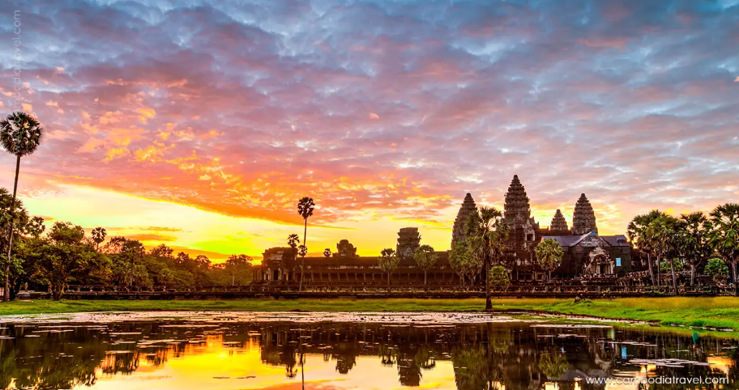
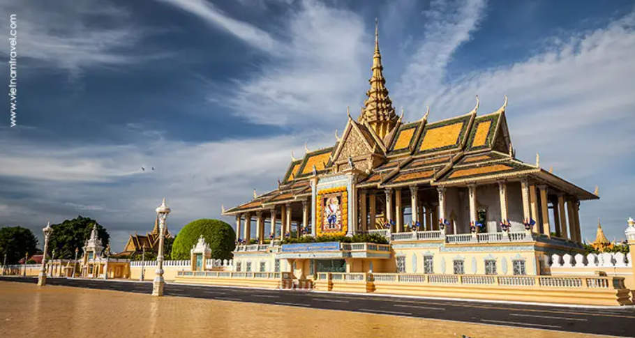
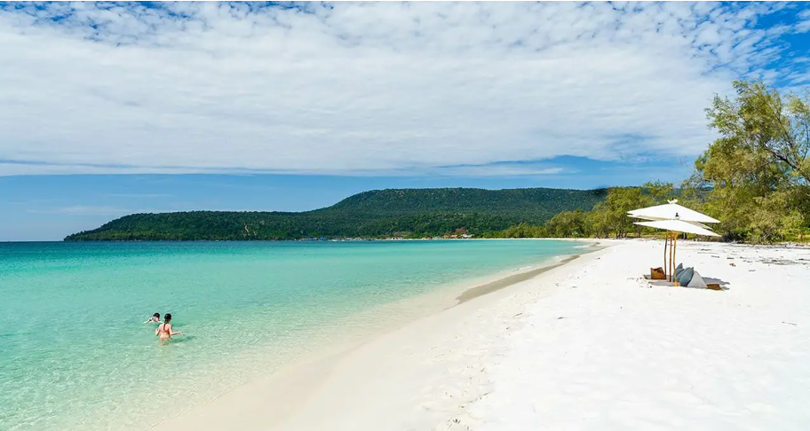

Angkor Wat is the most famous temple in Cambodia and one of the largest religious monuments in the world. It was built in the 12th century and is a symbol of the country’s history and culture.

Phnom Penh is the capital city of Cambodia. It is known for its royal palace, museums, and busy markets. The city mixes modern life with historical landmarks.

Koh Rong is a beautiful island known for its white sand beaches and clear blue water. It is a popular place for tourists who want to relax and enjoy nature.
Learn more about these places from Cambodia-travel.
Watch here: YouTube Video
Image source: Cambodia-travel